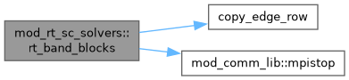
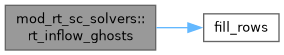
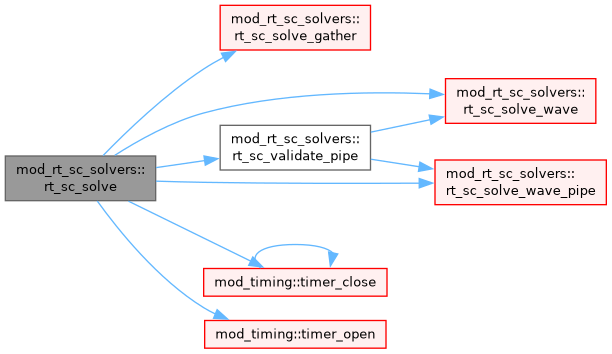
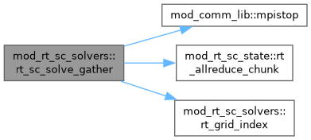
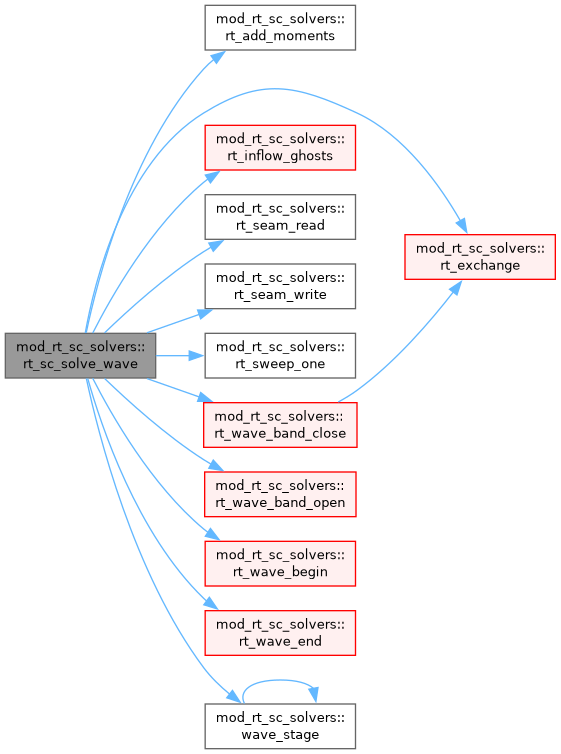
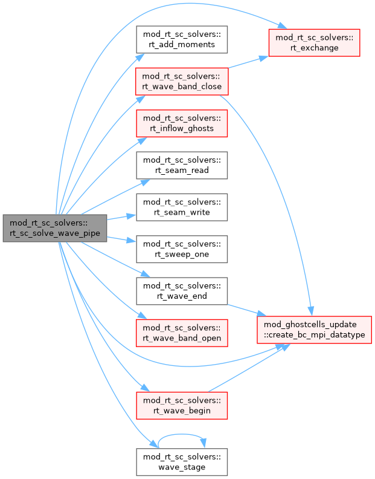
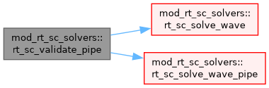
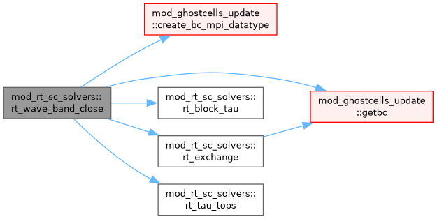
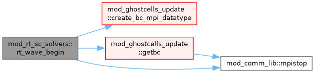
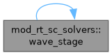

Solvers of the short-characteristics (SC) radiative transfer and their dispatch. More...
Functions/Subroutines | |
| subroutine, public | rt_sc_solve () |
| Collective, once per step. For each band on rt_sc_amr_level it sweeps all rays and forms the heating Q, the thin/thick blend with the tau^2 taper, in i_qrad, which is zero elsewhere, together with Fy, and Iout on the gather path. rt_sc_add_source applies the energy every stage. The gather path is for comparison only, see rt_sc_solve_gather. | |
| subroutine | rt_sc_solve_gather () |
| Replicated gather, the original implementation, kept for comparison and not for production. Every rank holds chi and B of the whole band, the rays are shared out over the node-local ranks, and the moments are reduced within the node. Its memory grows with the whole band on every rank, and its periodic seam takes a vacuum inflow for rays swept column by column (sc_sweep_2d). Use KBA, pipelined or not. | |
| logical function | rt_grid_index (xh, xv, ib, ig, jg) |
| Indices (ig, jg) on the replicated grid of band ib of the cell centred at xh along hdim and xv along updim, false when the cell lies outside the band. | |
| subroutine | rt_sc_validate_pipe () |
| Validation of the pipelined KBA. The ray-by-ray Q is copied into i_iout and the pipelined Q left in i_qrad, and the largest difference is printed relative to the largest Q, both over the whole band and away from the seam blocks, the outermost x-block on either side. Both solves start from the same seam inflow, since the first one hands its own on to the second. | |
| subroutine | rt_band_blocks (ib) |
| List the blocks of this rank that lie in band ib, with their block position (bi, bj), cache chi and B on them, ghosts included, and check that the band is one complete level. | |
| subroutine | rt_tau_tops (tautop) |
| Tau at the top face of every block row of the current band, per global column along hdim. Each block adds the optical thickness of its columns, one allreduce assembles the table, and the top of a row lies below all the rows above it. | |
| subroutine | rt_block_tau (iblk, tautop, taub) |
| Tau from the band top to every cell centre of block iblk, integrated down from the top face of the block. | |
| subroutine | rt_wave_begin (nslot) |
| Prologue of both KBA schedules on level rt_sc_amr_level. It checks the setup, sets the x-distribution mode, refreshes the hydro ghosts, allocates the intensity state and the seam buffers, and builds the nslot wavefront datatype. Each rank sweeps only its own band blocks, ordered per ray by the diagonal p+q counted from the ray's upwind corner, with a getbc between diagonals, so every cell is swept once per ray. | |
| subroutine | rt_wave_band_open (ib) |
| Open band ib. It lists and caches the band blocks and zeroes the accumulators. | |
| subroutine | rt_wave_band_close (nslot) |
| Close the band. The fluxes are scaled by c_norm, Q is formed as the imbalance or as the -div F blend with the tau^2 taper, and the nslot wavefront datatype is restored. | |
| subroutine | rt_add_moments (iblk, k, iib) |
| Add the weighted intensity iib of ray k on block iblk to J in i_qrad, Fy in i_frad and Fx in rtw_fx. | |
| subroutine | rt_exchange (nslot) |
| Ghost exchange of the nslot intensity columns of ps_rt from i_isw, with the physical boundaries left alone, since the inflows are written separately. | |
| subroutine | rt_wave_end () |
| Epilogue. It hands the seam edges over to the next solve, restores the hydro datatype and releases the block list. | |
| subroutine | rt_seam_read (iib, igrid, ibi, sx, k) |
| Seam read. At the domain edge where ray k enters, the wrapped upwind ghost column of the block takes the outflow of the far edge from the last solve. A ray moving in +x enters through the first block column and reads seamR, and one moving in -x enters through the last and reads seamL. | |
| subroutine | rt_seam_write (iib, igrid, ibi, sx, k) |
| Seam write. At the far domain edge the outflow of ray k is kept for the next solve. A ray moving in +x leaves through the last block column into seamR, and one moving in -x leaves through the first into seamL. | |
| subroutine | rt_inflow_ghosts (islot) |
| Inflow intensity in slot islot. The ghosts beyond the band ends, and beyond the horizontal edges where hdim is not periodic, take B of the edge cell when that end is thermal and zero when it is open. The band ends are interior rows of the domain, so getbc never fills them. | |
| subroutine | rt_sweep_one (iblk, k, iib) |
| Sweep block iblk for ray k in place on iib. With updim = 1 the block is transposed around the kernel, which expects its first index to be horizontal. The sweep time of each block is accumulated for the load balancer. | |
| pure integer function | wave_stage (b, n, s) |
| Position of a block counted from the upwind end of a row of n blocks, for a ray whose cosine along that row has sign s. With s = 0 no block depends on its neighbour along the row, so every block sits at the first position. | |
| subroutine | rt_sc_solve_wave () |
| Ray-by-ray KBA, with one ray at a time passing through the diagonal wavefront. | |
| subroutine | rt_sc_solve_wave_pipe () |
| Pipelined KBA. The direction-sign corners run together in batches of nisw slots, and within each corner the rays follow one another through its wavefront. The result agrees with that of rt_sc_solve_wave to round-off, since the moments are summed in another order. | |
Detailed Description
Solvers of the short-characteristics (SC) radiative transfer and their dispatch.
rt_sc_solve runs once per step. It sweeps every ray through every band on rt_sc_amr_level and leaves the heating Q in i_qrad and the vertical flux Fy in i_frad. The pipelined KBA wavefront is the default. Its sweep corners run at once, each in its own intensity slot, and the rays of a corner follow one another through the wavefront. The ray-by-ray wavefront passes one ray at a time, agrees with it to round-off, and is the simplest to read. In both, each rank sweeps only its own band blocks, one diagonal of blocks at a time, with a getbc of the ray intensity between diagonals, so that no rank holds the whole band. The replicated gather assembles chi and B of the whole band on every rank and is kept as the reference. It differs from the wavefront only where rays cross a periodic seam
The loops over block cells are written along (hdim, updim) through hv, so that one loop serves either stratification axis
Structure: A. dispatch rt_sc_solve and the validation rt_sc_validate_pipe; B. gather rt_sc_solve_gather and rt_grid_index; C. band blocks rt_band_blocks, which lists the band blocks and caches chi and B, with rt_tau_tops and rt_block_tau for tau from the band top, which rt_sc_emergent_tau1 shares; D. wave stages rt_wave_begin, rt_wave_band_open, rt_wave_band_close, which forms Q, and rt_wave_end, with rt_add_moments and rt_exchange; E. block work rt_seam_read and rt_seam_write for the periodic seam, rt_inflow_ghosts for the band-end and edge inflows, and rt_sweep_one; F. schedules rt_sc_solve_wave and rt_sc_solve_wave_pipe, with wave_stage
Jack Jenkins (10.2026); More or less finished in v1 state for amrvac4.0
Function/Subroutine Documentation
◆ rt_add_moments()
| subroutine mod_rt_sc_solvers::rt_add_moments | ( | integer, intent(in) | iblk, |
| integer, intent(in) | k, | ||
| double precision, dimension(ixg^t), intent(in) | iib ) |
Add the weighted intensity iib of ray k on block iblk to J in i_qrad, Fy in i_frad and Fx in rtw_fx.
Definition at line 505 of file mod_rt_sc_solvers.t.
◆ rt_band_blocks()
| subroutine mod_rt_sc_solvers::rt_band_blocks | ( | integer, intent(in) | ib | ) |
List the blocks of this rank that lie in band ib, with their block position (bi, bj), cache chi and B on them, ghosts included, and check that the band is one complete level.
Definition at line 267 of file mod_rt_sc_solvers.t.

◆ rt_block_tau()
| subroutine mod_rt_sc_solvers::rt_block_tau | ( | integer, intent(in) | iblk, |
| double precision, dimension(rg_nh,wv_nbxv), intent(in) | tautop, | ||
| double precision, dimension(ixg^t), intent(out) | taub ) |
Tau from the band top to every cell centre of block iblk, integrated down from the top face of the block.
Definition at line 361 of file mod_rt_sc_solvers.t.
◆ rt_exchange()
| subroutine mod_rt_sc_solvers::rt_exchange | ( | integer, intent(in) | nslot | ) |
Ghost exchange of the nslot intensity columns of ps_rt from i_isw, with the physical boundaries left alone, since the inflows are written separately.
Definition at line 519 of file mod_rt_sc_solvers.t.
◆ rt_grid_index()
| logical function mod_rt_sc_solvers::rt_grid_index | ( | double precision, intent(in) | xh, |
| double precision, intent(in) | xv, | ||
| integer, intent(in) | ib, | ||
| integer, intent(out) | ig, | ||
| integer, intent(out) | jg ) |
Indices (ig, jg) on the replicated grid of band ib of the cell centred at xh along hdim and xv along updim, false when the cell lies outside the band.
Definition at line 207 of file mod_rt_sc_solvers.t.
◆ rt_inflow_ghosts()
| subroutine mod_rt_sc_solvers::rt_inflow_ghosts | ( | integer, intent(in) | islot | ) |
Inflow intensity in slot islot. The ghosts beyond the band ends, and beyond the horizontal edges where hdim is not periodic, take B of the edge cell when that end is thermal and zero when it is open. The band ends are interior rows of the domain, so getbc never fills them.
Definition at line 584 of file mod_rt_sc_solvers.t.

◆ rt_sc_solve()
| subroutine, public mod_rt_sc_solvers::rt_sc_solve |
Collective, once per step. For each band on rt_sc_amr_level it sweeps all rays and forms the heating Q, the thin/thick blend with the tau^2 taper, in i_qrad, which is zero elsewhere, together with Fy, and Iout on the gather path. rt_sc_add_source applies the energy every stage. The gather path is for comparison only, see rt_sc_solve_gather.
Definition at line 43 of file mod_rt_sc_solvers.t.

◆ rt_sc_solve_gather()
| subroutine mod_rt_sc_solvers::rt_sc_solve_gather |
Replicated gather, the original implementation, kept for comparison and not for production. Every rank holds chi and B of the whole band, the rays are shared out over the node-local ranks, and the moments are reduced within the node. Its memory grows with the whole band on every rank, and its periodic seam takes a vacuum inflow for rays swept column by column (sc_sweep_2d). Use KBA, pipelined or not.
Definition at line 78 of file mod_rt_sc_solvers.t.

◆ rt_sc_solve_wave()
| subroutine mod_rt_sc_solvers::rt_sc_solve_wave |
Ray-by-ray KBA, with one ray at a time passing through the diagonal wavefront.
Definition at line 661 of file mod_rt_sc_solvers.t.

◆ rt_sc_solve_wave_pipe()
| subroutine mod_rt_sc_solvers::rt_sc_solve_wave_pipe |
Pipelined KBA. The direction-sign corners run together in batches of nisw slots, and within each corner the rays follow one another through its wavefront. The result agrees with that of rt_sc_solve_wave to round-off, since the moments are summed in another order.
Definition at line 706 of file mod_rt_sc_solvers.t.

◆ rt_sc_validate_pipe()
| subroutine mod_rt_sc_solvers::rt_sc_validate_pipe |
Validation of the pipelined KBA. The ray-by-ray Q is copied into i_iout and the pipelined Q left in i_qrad, and the largest difference is printed relative to the largest Q, both over the whole band and away from the seam blocks, the outermost x-block on either side. Both solves start from the same seam inflow, since the first one hands its own on to the second.
Definition at line 224 of file mod_rt_sc_solvers.t.

◆ rt_seam_read()
| subroutine mod_rt_sc_solvers::rt_seam_read | ( | double precision, dimension(ixg^t), intent(inout) | iib, |
| integer, intent(in) | igrid, | ||
| integer, intent(in) | ibi, | ||
| integer, intent(in) | sx, | ||
| integer, intent(in) | k ) |
Seam read. At the domain edge where ray k enters, the wrapped upwind ghost column of the block takes the outflow of the far edge from the last solve. A ray moving in +x enters through the first block column and reads seamR, and one moving in -x enters through the last and reads seamL.
Definition at line 543 of file mod_rt_sc_solvers.t.
◆ rt_seam_write()
| subroutine mod_rt_sc_solvers::rt_seam_write | ( | double precision, dimension(ixg^t), intent(in) | iib, |
| integer, intent(in) | igrid, | ||
| integer, intent(in) | ibi, | ||
| integer, intent(in) | sx, | ||
| integer, intent(in) | k ) |
Seam write. At the far domain edge the outflow of ray k is kept for the next solve. A ray moving in +x leaves through the last block column into seamR, and one moving in -x leaves through the first into seamL.
Definition at line 564 of file mod_rt_sc_solvers.t.
◆ rt_sweep_one()
| subroutine mod_rt_sc_solvers::rt_sweep_one | ( | integer, intent(in) | iblk, |
| integer, intent(in) | k, | ||
| double precision, dimension(ixg^t), intent(inout) | iib ) |
Sweep block iblk for ray k in place on iib. With updim = 1 the block is transposed around the kernel, which expects its first index to be horizontal. The sweep time of each block is accumulated for the load balancer.
Definition at line 631 of file mod_rt_sc_solvers.t.
◆ rt_tau_tops()
| subroutine mod_rt_sc_solvers::rt_tau_tops | ( | double precision, dimension(rg_nh,wv_nbxv), intent(out) | tautop | ) |
Tau at the top face of every block row of the current band, per global column along hdim. Each block adds the optical thickness of its columns, one allreduce assembles the table, and the top of a row lies below all the rows above it.
Definition at line 333 of file mod_rt_sc_solvers.t.
◆ rt_wave_band_close()
| subroutine mod_rt_sc_solvers::rt_wave_band_close | ( | integer, intent(in) | nslot | ) |
Close the band. The fluxes are scaled by c_norm, Q is formed as the imbalance or as the -div F blend with the tau^2 taper, and the nslot wavefront datatype is restored.
Definition at line 432 of file mod_rt_sc_solvers.t.

◆ rt_wave_band_open()
| subroutine mod_rt_sc_solvers::rt_wave_band_open | ( | integer, intent(in) | ib | ) |
Open band ib. It lists and caches the band blocks and zeroes the accumulators.
Definition at line 413 of file mod_rt_sc_solvers.t.
◆ rt_wave_begin()
| subroutine mod_rt_sc_solvers::rt_wave_begin | ( | integer, intent(in) | nslot | ) |
Prologue of both KBA schedules on level rt_sc_amr_level. It checks the setup, sets the x-distribution mode, refreshes the hydro ghosts, allocates the intensity state and the seam buffers, and builds the nslot wavefront datatype. Each rank sweeps only its own band blocks, ordered per ray by the diagonal p+q counted from the ray's upwind corner, with a getbc between diagonals, so every cell is swept once per ray.
Definition at line 385 of file mod_rt_sc_solvers.t.

◆ rt_wave_end()
| subroutine mod_rt_sc_solvers::rt_wave_end |
Epilogue. It hands the seam edges over to the next solve, restores the hydro datatype and releases the block list.
Definition at line 530 of file mod_rt_sc_solvers.t.
◆ wave_stage()
| pure integer function mod_rt_sc_solvers::wave_stage | ( | integer, intent(in) | b, |
| integer, intent(in) | n, | ||
| integer, intent(in) | s ) |
Position of a block counted from the upwind end of a row of n blocks, for a ray whose cosine along that row has sign s. With s = 0 no block depends on its neighbour along the row, so every block sits at the first position.
Definition at line 655 of file mod_rt_sc_solvers.t.

Generated by